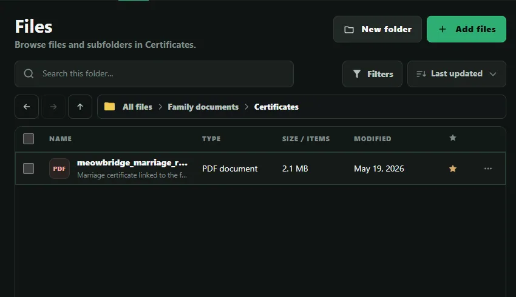
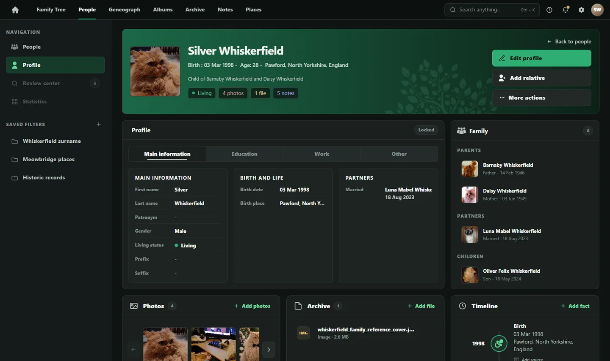
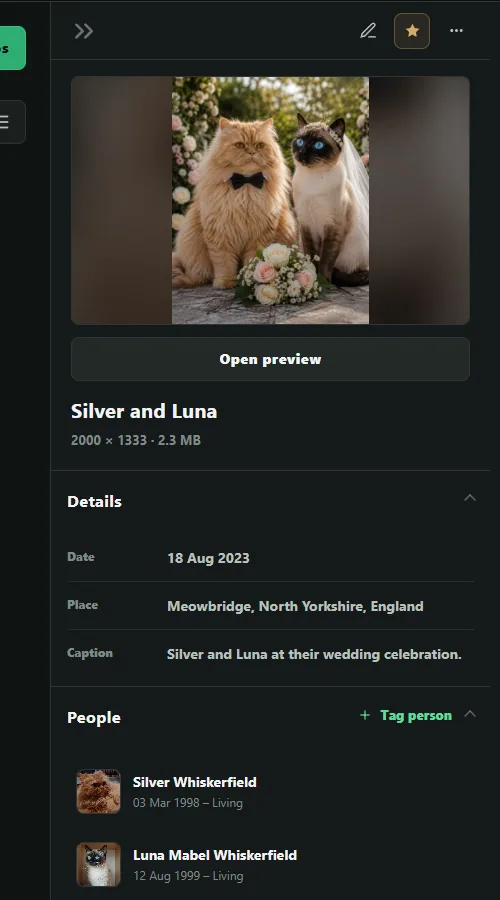
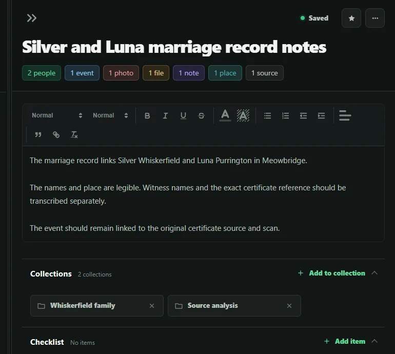
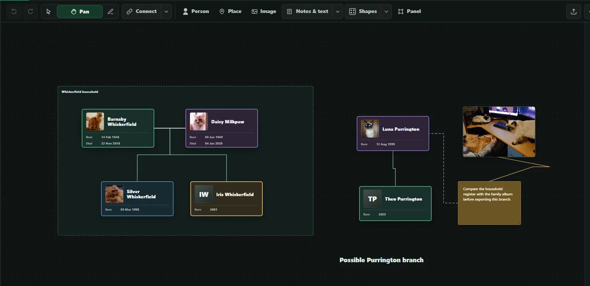

01 / Archive
The record has a place.
The Meowbridge marriage certificate lives with the project’s family documents, where it can be found again alongside its linked people and research.

GeneoGraph brings your family tree, people, photos, documents, notes, places and visual research into one connected workspace—so you spend less time managing separate tools and more time understanding your family history.

See the family structure at a glance, then open a person for dates, relationships and the research behind their story. More detail doesn’t have to mean a more crowded tree.

Keep records in Archive, photographs in Albums and working thoughts in Notes—without forcing everything into the family tree.
The Meowbridge marriage certificate lives with the project’s family documents, where it can be found again alongside its linked people and research.

The Silver and Luna photograph sits in Albums with its date, Meowbridge location and connections to the people in it.

“Silver and Luna marriage record notes” keeps the working interpretation and follow-up questions connected to the certificate, photograph and couple.

Silver has one person record. His relationships and research can live in the right parts of the project without becoming separate, disconnected copies.
One record many views
Different homes for different material. Silver remains the thread between them.
Geneograph is the flexible board inside the same project. Arrange linked people and research context into a visual that helps you present the family—or keep an open question in view.

Present. Arrange the same project people with photographs and context in a freer family visual.
Investigate. Keep a possible branch and its working note visible on the board without turning the question into a settled tree relationship.
Keep the family structure clear.
Give every part of the research a home.
Keep context attached to what it belongs to.
See and present the family your way.
GeneoGraph’s direction is local projects and portable data, with optional online services later—not a requirement to hand over your research.
Open the Whiskerfield sample project and follow the research from family structure to connected material and a custom Geneograph view.
Open the DemoGeneoGraph is still in development. If you research family history and want to help refine the workspace, get in touch.
GeneoGraph grew from hands-on family-history work and the challenge of keeping people, records, notes and unresolved questions connected.